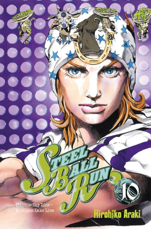
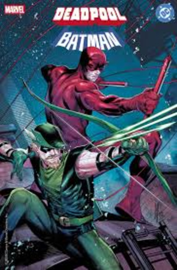
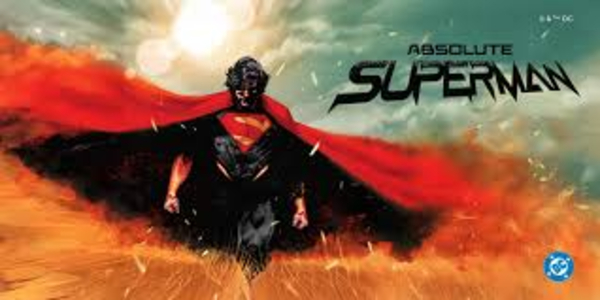
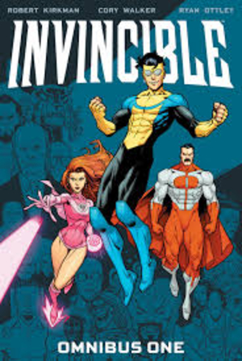

This issue is part of the crossover event between Uncanny X-men and X-men called Raid on Graymalkin, due to this the cover gets to use more characters than usual. THe Cover is an homage to the great Marvel vs Capcom games which is very symbolic for the X-men since they started that series.
2. Steel Ball Run Vol.10 (Original)
This is the 10th volume of my favorite part of jojo's bizarre adventure. I found this at a convention and at the time this was the only way to get a physical copy of this story before later being translated. I love how it stands out in my collection because of being the only work in a different language

1. Deadpool / Batman (Marco Checchetto Variant)
This would be my five year old self's greatest dream, a crossover of his favorite comic universes. Deadpool/Batman contains multiple stories with the general concept being "how would these characters interact". In particular, this variant is drawn by Marco Checchetto, one of the best modern artists. I was extremely lucky to find this.

Ranking of My Favorite Series
3. Absolute Superman
Jason Aaron reinvents Superman by altering his backstory so he was raised on krypton, experiencing the classism and greed that destroyed the planet. This gives him further motivation stop the same from happening on earth. The story provide something unique with Superman being a champion of the oppressed.

2. Invincible
This comic is a beautiful love letter to the superhero comic genre while not having the limitations of Marvel and DC. The story is allowed to permantly develop with changes like villains winning without backtracking and characters dying without revival. It was a exceptional comic and I still remember bingeing all 144 issues in three sittings.

1. Ultimates (2024)
Deniz Camp uses the set-up from 2023's Ultimate Invasion, which introducing a villain controlled world with no heroes, to a team of characters who's goal is to take back their world from those who changed it. The Ultimates establish themselves as revolutionaires comprised of both orignal heroes and new legacy heroes. It uses its concept well in a superhero context as the team grows and develops their movement to fit the needs of the people, eventually becoming the flame that burns the empire.